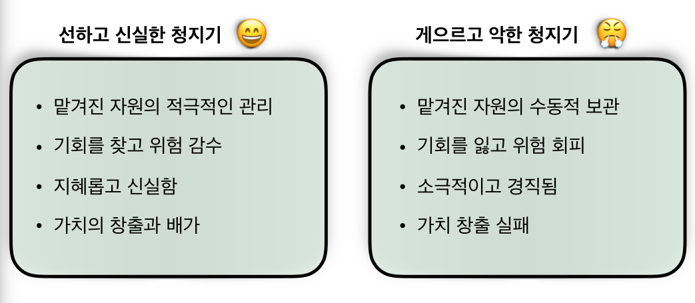
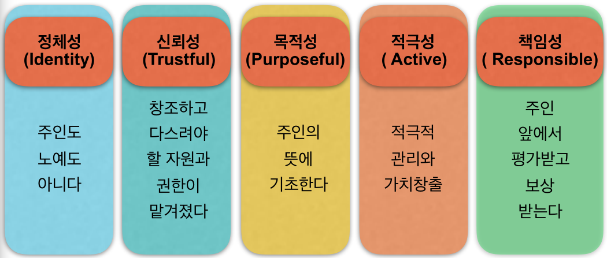
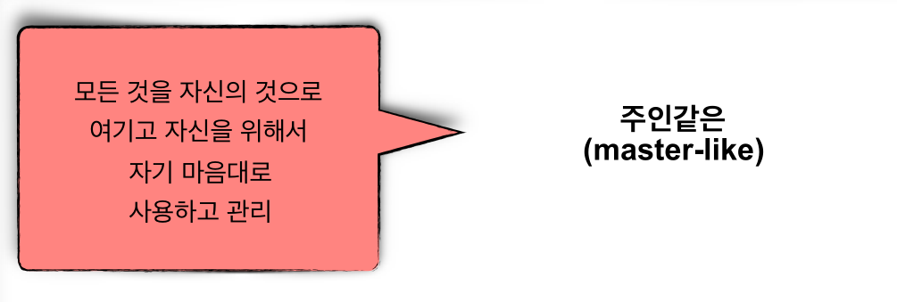
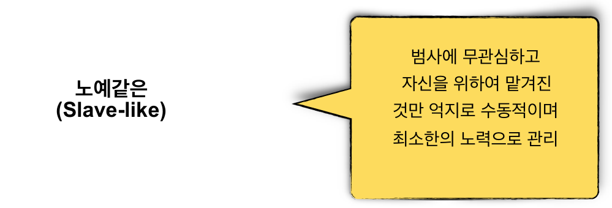
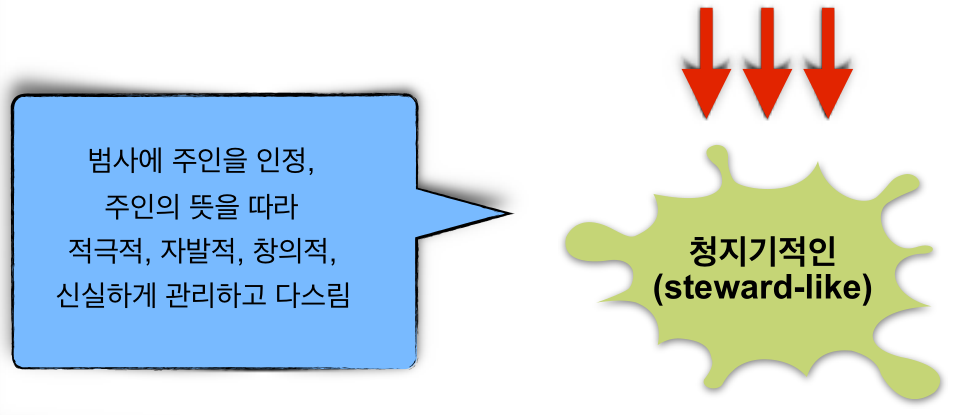

다시 돌아올 주인을 기다리는 신실한 종
이러므로 너희도 준비하고 있으라 생각하지 않은 때에 인자가 오리라
충성되고 지혜 있는 종이 되어 주인에게 그 집 사람들을 맡아 때를 따라
양식을 나눠 줄 자가 누구냐 주인이 올 때에 그 종이 이렇게 하는 것을 보면
그 종이 복이 있으리로다 내가 진실로 너희에게 이르노니
주인이 그의 모든 소유를 그에게 맡기리라
- 마태복음 24:44-47, 개역개정
예수님께서 주신 여러 비유를 통하여 성경에서 이야기 하는 청지기적인 삶의 모습은
더 구체적으로 나타납니다. 그것은 자신의 귀한 재산을 맡기고 먼 여행을 떠났다가 다시
돌아올 주인을 기다리는 신실한 종의 모습입니다.
선한 청지기의 특징
성경은 더 나아가서 선한 청지기와 악한 청지기의 모습에 대해서 구분하여 말씀하고
있습니다. 예수님께서 마태복음 25장 14절에서 30절을 통해 설명하는 달란트 비유를
읽어 보시길 바랍니다. 달란트 비유에 나타난 선한 청지기와 악한 청지기의 특징은 무엇
입니까?

청지기적인 삶의 본질
성경은 안식을 어떻게 정의하는가?
성경은 첫 장 부터 하나님의 일, 천지를 창조하시고 인간을 창조하신 하나님의 사역을
기록합니다. 그리고 이 사역의 마지막은 쉼, '안식’ 이었습니다. 이것이 사람과 세상을
창조하신 하나님의 창조 매뉴얼입니다. 일과 쉼은 결코 서로 뗄 수 없는 하나 입니다.
반드시 일에는 쉼이 따르고, 쉼은 일의 또 다른 한 면이 되는 것입니다.

청지기는 우리의 정체성이며 삶의 방식입니다
맡겨진 것에 대한 인식
하나님께서 나의 삶터에서 맡기신 것과 그곳에서 내가 해야할 직무를 분명히 이해하는
것이 청지기적인 삶의 시작입니다. 나의 삶터에서 지금 내가 창조하고 다스리도록 맡겨진
자원과 영역, 그리고 직무는 무엇입니까?
하나님께서 나에게 맞기신 것과 맞겨진 직무를 이해하는 것이
청지기적인 삶의 시작입니다
청지기적인 마음가짐(Mindset)
청지기적인 삶은 삶터에 임하는 우리의 마음가짐과 태도로 나타납니다. 하지만 현대 사회는
다양한 경로로 우리를 도전하여 청지기적인 마음가짐이 아니라 마치 자신이 '주인처럼'
살아가게 하거나 '노예적인 마음가짐' 으로 살아가게 합니다.
삶터에 임하는 나의 마음가짐은 어떤 모습에 가까운 가요?

누가 너를 남달리 구별하였느냐 네게 있는 것 중에 받지 아니한 것이 무엇이냐
네가 받았은즉 어찌하여 받지 아니한 것 같이 자랑하느냐
- 고린도전서 4:7, 개역개정

그리스도께서 우리를 자유롭게 하려고 자유를 주셨으니
그러므로 굳건하게 서서 다시는 종의 멍에를 메지 말라
- 갈라디아서 5:1, 개역개정

주인의 뜻에 따른 관리
애매하고 복잡하게 얽혀 있는 우리의 삶터에서 청지기적인 삶을 살기 위해서는 주인의
뜻을 알아야 합니다. 하나님께서 기뻐하시는 뜻은 '하나님 나라의 다양한 가치들로'
(Kingdom Values) 나타나며 이는 삶터에서 우리가 하는 일들과 긴밀하게 연결되어
있습니다. 즉, 삶터에서 우리의 일을 통하여 하나님 나라의 가치들이 만들어지기도 하고
무너지기도 하는 것입니다.
- 어리석은 부자 (누가복음 12:61-21)
- 지혜로운 농부 보아스 (룻기 2:8-9)
- 지혜로운 관리자 요셉 (창세기 3:3-4; 39:23-24)
- 지혜로운 상인 바울 (사도행전 17:17; 18:3; 20:35)
청지기적인 삶은 삶터에서 하나님께서 기뻐하시는 하나님 나라의 가치들을 만들고 지켜
나가는 적극적인 실천과 노력으로 나타나게 됩니다. 우리의 삶터에서 경제적 가치를
추구할 뿐 아니라 그 '대가를 지불' 하여 하나님 나라의 다른 가치들을 만들고 세워가는
것입니다. 우리는 세상 사람들과 다른 회계 체계 (Accounting System)를 가지고 있기
때문입니다.
삶터에 주어진 질문들
- 나의 삶터에서는 어떠한 가치들이 만들어지고 있는가?
- 지금 나의 재산 장부와 하나님 나라의 장부에는 얼마 만큼의 잔액이 남아있는가?
- 나는 통하여 나의 삶터에 하나님의 나라가 확장되고 있는가?
삶터의 청지기
천국은 마치 밭에 감추인 보화와 같으니 사람이 이를 발견한 후
숨겨 두고 기뻐하며 돌아가서 자기의 소유를 다 팔아 그 밭을 사느니라
- 마태복음 13:44, 개역개정
청지기적인 삶은 하나님께서 각자의 삶터에 맡기신 모든 자원을 적극적으로 관리하고
다스리며 하나님 나라의 가치를 만들어가는 기쁨의 삶입니다. 바로, 하나님 나라를 위한
대가를 지불하여 그 나의 가치로 살아가는 것입니다.
소그룹 나눔
- 삶터에서 당신은 어떤 모습, 어떤 마음가짐으로 살아가고 있습니까?
청지기가 아닌 노예나 주인의 모습이 나타나는 때는 언제입니까?
삶터에서 어떻게 청지기적인 정체성과 마음가짐으로 살아갈 수 있습니까?
- 당신의 삶터는 하나님의 뜻대로 다스려지고 있습니까?
삶터에서 당신은 어떠한 하나님 나라의 가치들을 만들어 가고 있습니까?
하나님 나라를 위하여 기쁘게 대가를 지불해 본 적이 있습니까?